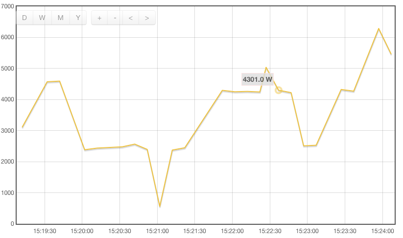
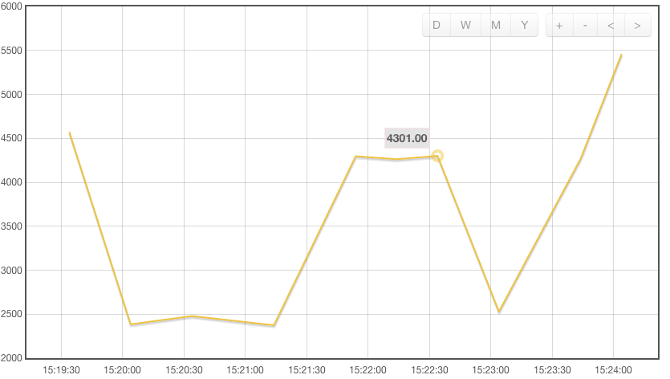

Since a couple of days it seems that two out of three samples that are sent via bulk upload from my emonbase to emoncms.org are not stored. These samples do get stored fine on my local emoncms.
You can see the difference between local and emoncms.org in the following pictures:
local emoncms:

emoncms.org:

My emonhub.log shows that the samples are buffered and sent:
2016-02-06 15:22:39,833 DEBUG RFM2Pi 6831 NEW FRAME : OK 8 205 16 108 4 105 7 23 0 92 86 231 0 232 0 232 0 232 0 184 11 184 11 2 0 0 0 (-33)
2016-02-06 15:22:39,836 DEBUG RFM2Pi 6831 Timestamp : 1454768559.83
2016-02-06 15:22:39,836 DEBUG RFM2Pi 6831 From Node : 8
2016-02-06 15:22:39,837 DEBUG RFM2Pi 6831 Values : [4301, 1132, 1897, 23, 221.08, 23.1, 23.200000000000003, 23.200000000000003, 23.200000000000003, 300, 300, 2]
2016-02-06 15:22:39,838 DEBUG RFM2Pi 6831 RSSI : -33
2016-02-06 15:22:39,838 INFO RFM2Pi Publishing: emonhub/rx/8/values 4301,1132,1897,23,221.08,23.1,23.2,23.2,23.2,300,300,2
2016-02-06 15:22:39,840 DEBUG RFM2Pi 6831 adding frame to buffer => [1454768559, 8, 4301, 1132, 1897, 23, 221.08, 23.1, 23.200000000000003, 23.200000000000003, 23.200000000000003, 300, 300, 2, -33]
2016-02-06 15:22:39,841 DEBUG RFM2Pi 6831 adding frame to buffer => [1454768559, 8, 4301, 1132, 1897, 23, 221.08, 23.1, 23.200000000000003, 23.200000000000003, 23.200000000000003, 300, 300, 2, -33]
2016-02-06 15:22:39,841 DEBUG RFM2Pi 6831 Sent to channel' : ToEmonCMS
2016-02-06 15:22:46,364 DEBUG RFM2Pi Discarding RX frame 'unreliable content'? 157 245 109 119 239 78 56 84 172 87 43 30 168 245 237 221 217 99 141 8 61 (-87)
2016-02-06 15:22:49,696 DEBUG RFM2Pi 6832 NEW FRAME : OK 8 127 16 106 4 115 7 23 0 127 86 231 0 232 0 232 0 232 0 184 11 184 11 2 0 0 0 (-30)
2016-02-06 15:22:49,699 DEBUG RFM2Pi 6832 Timestamp : 1454768569.7
2016-02-06 15:22:49,700 DEBUG RFM2Pi 6832 From Node : 8
2016-02-06 15:22:49,700 DEBUG RFM2Pi 6832 Values : [4223, 1130, 1907, 23, 221.43, 23.1, 23.200000000000003, 23.200000000000003, 23.200000000000003, 300, 300, 2]
2016-02-06 15:22:49,701 DEBUG RFM2Pi 6832 RSSI : -30
2016-02-06 15:22:49,701 INFO RFM2Pi Publishing: emonhub/rx/8/values 4223,1130,1907,23,221.43,23.1,23.2,23.2,23.2,300,300,2
2016-02-06 15:22:49,703 DEBUG RFM2Pi 6832 adding frame to buffer => [1454768569, 8, 4223, 1130, 1907, 23, 221.43, 23.1, 23.200000000000003, 23.200000000000003, 23.200000000000003, 300, 300, 2, -30]
2016-02-06 15:22:49,704 DEBUG RFM2Pi 6832 adding frame to buffer => [1454768569, 8, 4223, 1130, 1907, 23, 221.43, 23.1, 23.200000000000003, 23.200000000000003, 23.200000000000003, 300, 300, 2, -30]
2016-02-06 15:22:49,705 DEBUG RFM2Pi 6832 Sent to channel' : ToEmonCMS
2016-02-06 15:22:59,668 DEBUG RFM2Pi 6833 NEW FRAME : OK 8 207 9 123 4 1 0 23 0 134 89 231 0 232 0 232 0 232 0 184 11 184 11 2 0 0 0 (-32)
2016-02-06 15:22:59,671 DEBUG RFM2Pi 6833 Timestamp : 1454768579.67
2016-02-06 15:22:59,672 DEBUG RFM2Pi 6833 From Node : 8
2016-02-06 15:22:59,672 DEBUG RFM2Pi 6833 Values : [2511, 1147, 1, 23, 229.18, 23.1, 23.200000000000003, 23.200000000000003, 23.200000000000003, 300, 300, 2]
2016-02-06 15:22:59,673 DEBUG RFM2Pi 6833 RSSI : -32
2016-02-06 15:22:59,674 INFO RFM2Pi Publishing: emonhub/rx/8/values 2511,1147,1,23,229.18,23.1,23.2,23.2,23.2,300,300,2
2016-02-06 15:22:59,676 DEBUG RFM2Pi 6833 adding frame to buffer => [1454768579, 8, 2511, 1147, 1, 23, 229.18, 23.1, 23.200000000000003, 23.200000000000003, 23.200000000000003, 300, 300, 2, -32]
2016-02-06 15:22:59,677 DEBUG RFM2Pi 6833 adding frame to buffer => [1454768579, 8, 2511, 1147, 1, 23, 229.18, 23.1, 23.200000000000003, 23.200000000000003, 23.200000000000003, 300, 300, 2, -32]
2016-02-06 15:22:59,677 DEBUG RFM2Pi 6833 Sent to channel' : ToEmonCMS
2016-02-06 15:23:01,028 INFO emoncmsorg sending: http://emoncms.org/input/bulk.json?apikey=E-M-O-N-C-M-S-A-P-I-K-E-Y&data=[[1454768559,8,4301,1132,1897,23,221.08,23.1,23.200000000000003,23.200000000000003,23.200000000000003,300,300,2,-33],[1454768569,8,4223,1130,1907,23,221.43,23.1,23.200000000000003,23.200000000000003,23.200000000000003,300,300,2,-30],[1454768579,8,2511,1147,1,23,229.18,23.1,23.200000000000003,23.200000000000003,23.200000000000003,300,300,2,-32]]&sentat=1454768581
2016-02-06 15:23:31,084 INFO emoncmsorg sending: http://emoncms.org/input/bulk.json?apikey=E-M-O-N-C-M-S-A-P-I-K-E-Y&data=[[1454768589,8,2529,1128,2,23,227.81,23.1,23.200000000000003,23.200000000000003,23.200000000000003,300,300,2,-29],[1454768596,23,18.7,0,55.300000000000004,2.9000000000000004,1,-65],[1454768599,8,4294,1088,1873,23,220.45000000000002,23.1,23.200000000000003,23.200000000000003,23.200000000000003,300,300,2,-32],[1454768605,24,22,0,51.400000000000006,2.8000000000000003,1,-50],[1454768609,8,4325,1097,1877,23,219.97,23.1,23.200000000000003,23.200000000000003,23.200000000000003,300,300,2,-30]]&sentat=1454768611
sentat 15:23:01 :
15:22:39 4301
15:22:49 4223 <- not stored in emoncms.org
15:22:59 2511 <- not stored in emoncms.org
sentat 15:23:31 :
15:23:09 2529
15:23:19 4294 <- not stored in emoncms.org
15:23:29 4325 <- not stored in emoncms.org
I hope it's not due to something obvious I'm overlooking. Any help is greatly appreciated.
Re: Two out of three samples lost when sending to emoncms.org?
I was testing a new node this morning, and noticed the same thing!
In the "input view" the Last Updated field ranges between 19 and 59 seconds, it very rarely turns green. My local emoncms is receiving data in under 10 seconds in all cases.
Data in between updates is lost.
Re: Two out of three samples lost when sending to emoncms.org?
I just noticed the same and am glad that others are seeing it, as I thought something was wrong on my end. I had been off emon for a while and figured there was something wrong with my EmonBase or with my new continuous sketch, but trying the good 'ole Discrete sketch shows the same results.
Looking at my EmonBase emonhub log, I see that it sends a bulk update every 30seconds to emoncms.org, and each of those bulk updates has three packets in them, since my EmonTx is sending every 10s. The log shows an acknowledgement from emoncms.org, but the update on emoncms.org is delayed and going back to review the data shows data approximately every 30s or so...
Re: Two out of three samples lost when sending to emoncms.org?
What feed types and intervals are you all using?
Since the only (php)feed type that is designed to catch all inputs is the phptimeseries it is always best to "log to feed" your inputs to a phptimeseries to aid any debugging of other feeds. adding one is easy and it can be deleted again after the debugging.
The data in the OP would be correct IF the data feed was set for a 30second interval, could that be the case?
Although "10sec" data is uploaded in batches of 30 secs the feeds will need be 10 secs to match the individual packets that will be processed in batches rather than the upload interval.
The "last updated at" time on the inputs page can also sometimes be a little misleading if there is any (UTC) time difference between the emonbase and emoncms.org server, ie if there was a 30sec discrepancy then only seeing updates 30 to 59 secs ago would be understandable, I have often see a -2 to -6 "updated at" suggesting it was recieved 6 seconds before it was sent. This indicator should just be used for confirming updates are still happening and that the frequency seems correct ie if it keeps switching between 20 and 50 secs it is updating every 30 secs, that should not be a problem.
Whether the data is being processed and added to the feeds requires checking/monitoring of the "raw" csv as even the charting will pick and choose datapoints so cannot be used to verify missing data unless looking at a very short time window to ensure all available datapoints are displayed.
JD - what emonhub version are you running? the others are using the "emonpi" variant which uploads data every 30secs by default.
Comparing the phptimeseries csv and the affected feed csv will confirm if packets are received but not reaching the feeds in question or not.
Paul
Re: Two out of three samples lost when sending to emoncms.org?
Thanks for the reply, Paul.
On my local EmonBase, I don't use feeds, I only forward the data to emoncms.org for feeds there. On EmonCMS.org, my feeds are "Realtime" datatype, "PHPFIWA" engine, and I don't' know how to verify now, but I'm certain it's a 10s interval.
I added a timeseries (variable interval) feed for a node that is a message ID counter, so it's easy to see when there are lost packet. I'm seeing the same behavior as the fixed interval engine. Both feeds types (fixed and variable) show the same latest value, which also matches the latest value for the node that is feeding the feed.
Whenever I see the feed and node updated, I look at my emonhub log file and look for the bulk update message. I notice that the latest message id shown in the emoncms.org node and feed is not the latest in the bulk update packet. For example, the latest shown on emoncms.org is message id 17615, and the bulk update included 17616, and 17617. My bulk update messag efrom emonhub log is below:
2016-02-21 17:11:23,938 INFO emoncmsorg sending: http://emoncms.org/input/bulk.json?apikey=E-M-O-N-C-M-S-A-P-I-K-E-Y&data=[[1456074666,11,17615,0,811,28,8,0,12268,3000,3000,3000,3000,1,0,0,0,-44],[1456074674,11,17616,0,815,29,8,0,12269,3000,3000,3000,3000,1,0,0,0,-45],[1456074682,11,17617,0,813,29,8,0,12265,3000,3000,3000,3000,1,0,0,0,-44]]&sentat=1456074683
Doing this check a few times, it seems to be the first of the packets that's shown in the nodes/feeds page as the latest when there's an update and the others are lost. When I do an export to csv of the data, message 17616 and 17617 are missing there as well.
Let me know if there is something else I can check...
Re: Two out of three samples lost when sending to emoncms.org?
This problem appears to have been fixed on Feb 25 near 11:07 GMT. When I look at my emoncms.org feed, there's an interesting spike at that time where between 11:17 through 12:07 there was a loss of data. It could be my internet connection, but I see the restoration of data every 10s near 11:07.
Re: Two out of three samples lost when sending to emoncms.org?
My apologies for this issue, I missed this thread and only made the connection that this was a widespread issue yesterday. I had mis-configured the input limiter on the input/bulk api which I've now fixed. The data loss yesterday was due to this https://openenergymonitor.org/emon/node/12240
Re: Two out of three samples lost when sending to emoncms.org?
Trystan,
Thanks for fixing the input limiter on the input/bulk api. Just curious, was your fix implemented around 11:07 GMT on Feb 25?
Re: Two out of three samples lost when sending to emoncms.org?
Yes it was yesterday at that time that I implemented the fix.
Re: Two out of three samples lost when sending to emoncms.org?
I had the buffering disabled to work around this issue, but re-enabled it now and it is working again as expected. Thanks for the fix Trystan.